Баннер напечатаем и повесим сами — печать, монтаж и изготовление конструкций у агентства свои.
Свободно сейчас — 5 светодиодных экранов и 6 щитов 3×620 сентября освободится ещё один: ул. М. Горького 137
Все 49 мест на карте
Оранжевым — свободные. Нажмите метку или строку в списке: откроется фотография места и его состояние.
Карта загружается. Если она не появилась — все места перечислены ниже, с адресами и состоянием.
Пять светодиодных экранов
Экран крутит ролик в цикле — картинку меняют хоть каждый день, баннер печатать не нужно. Свободны все пять.
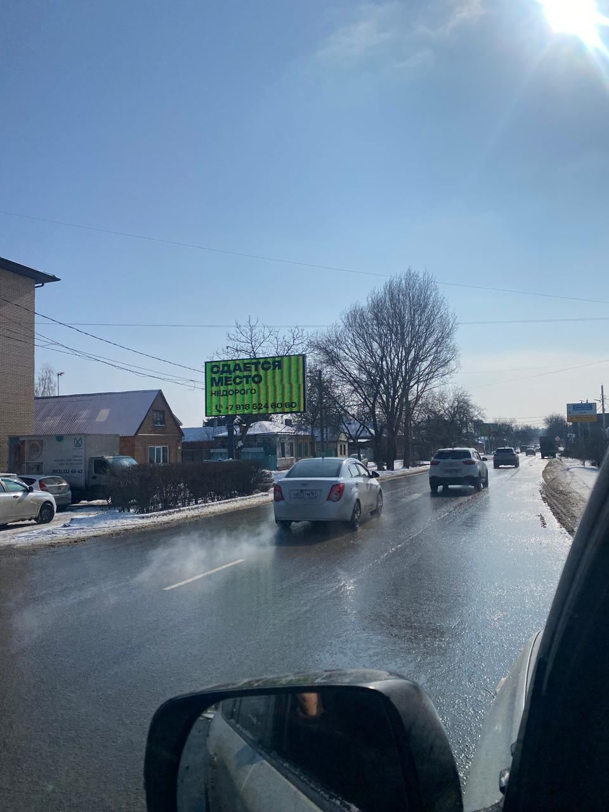
Свободенул. Куйбышева 7[от … ₽ в месяц]
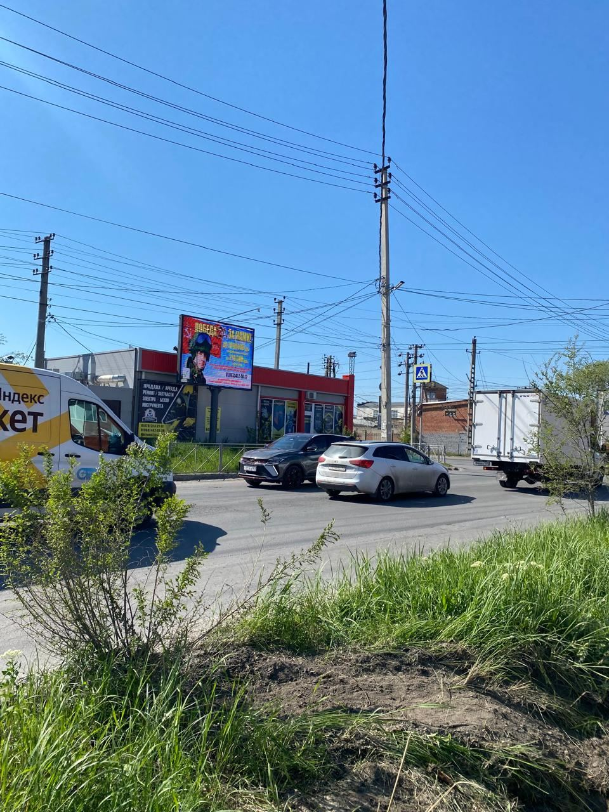
Свободенул. Максима Горького-1-й Пятилетки 354[от … ₽ в месяц]
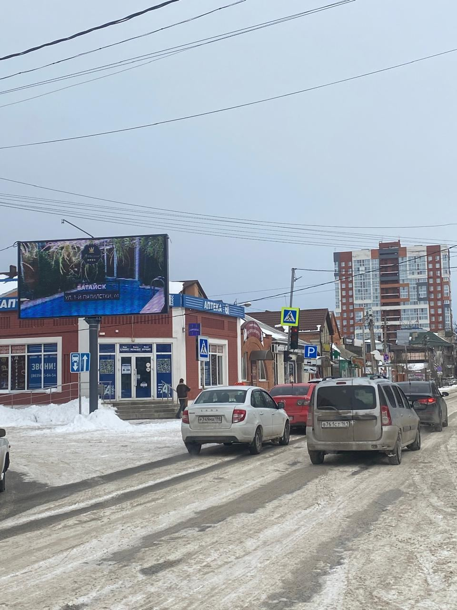
Свободенул. Максима Горького -Луначарского 117[от … ₽ в месяц]
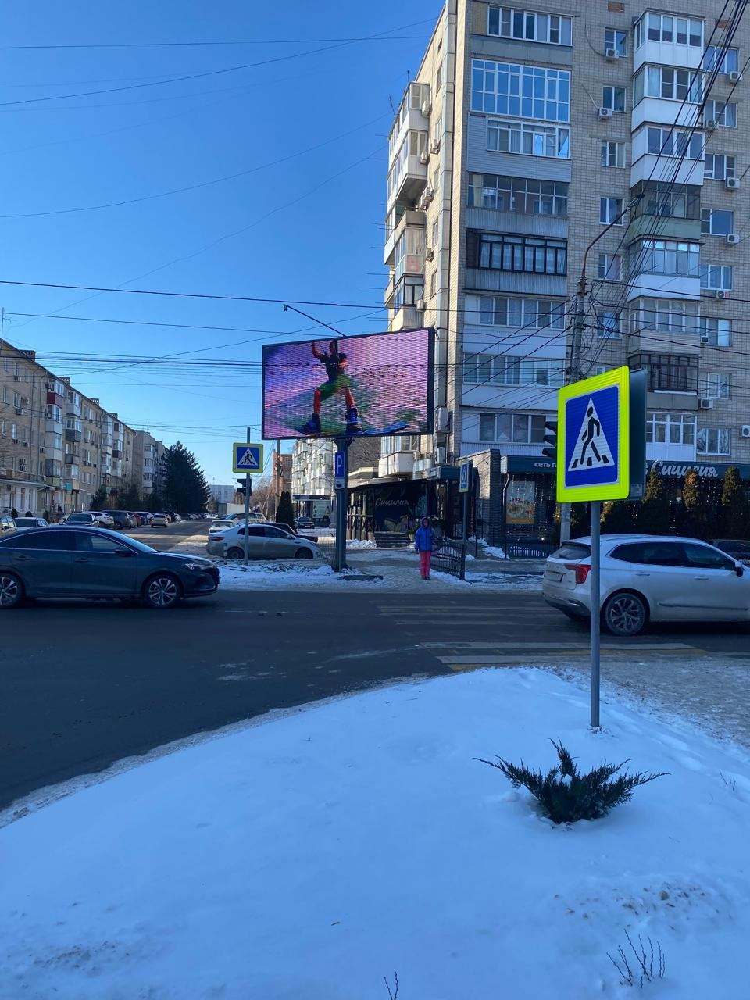
Свободенул. Энгельса-Крупская 172[от … ₽ в месяц]
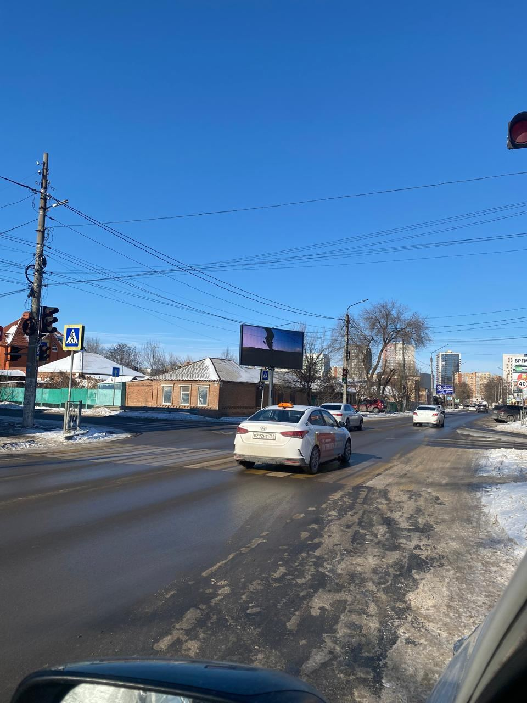
Свободенул. Энгельса-Ленинградская 46[от … ₽ в месяц]
Шесть свободных щитов 3×6
Готовы к размещению. Номер на снимке — тот же, что у метки на карте выше.
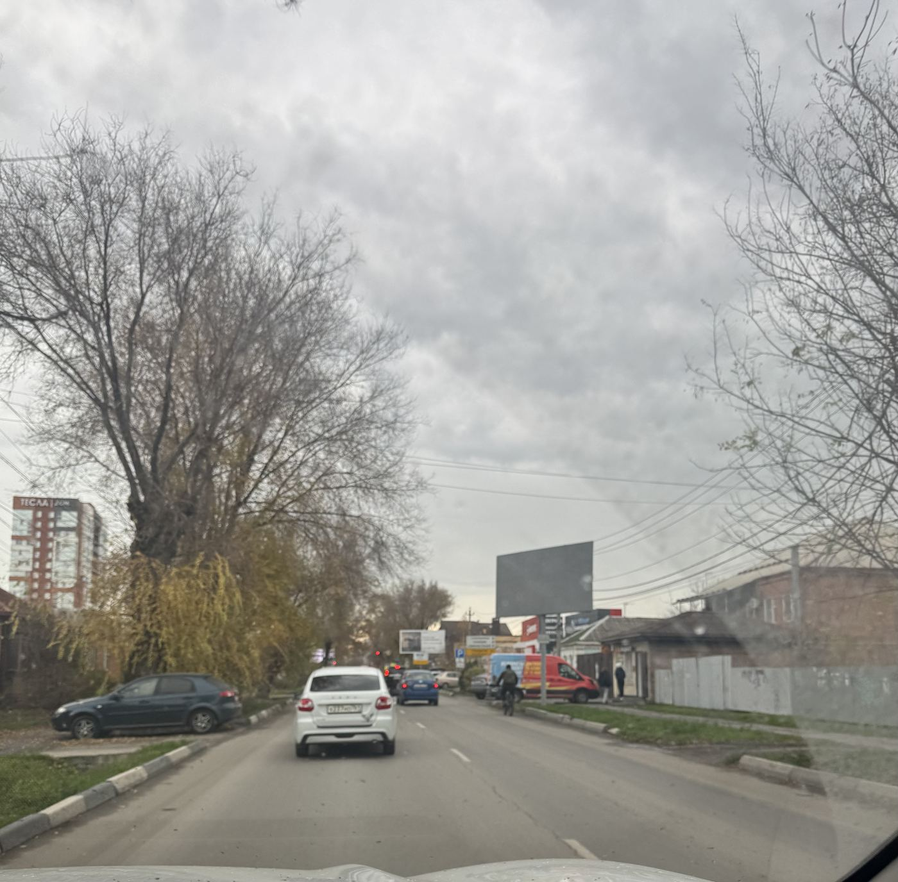
23
ул. Куйбышева 104
Свободен
[от … ₽ в месяц]
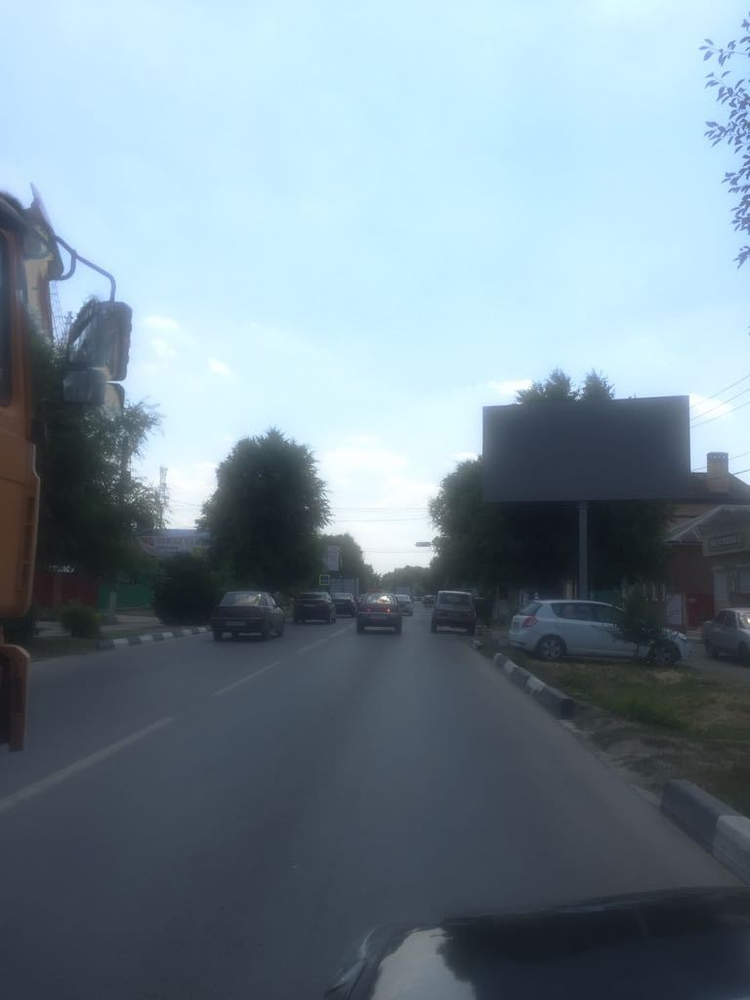
24
Куйбышева 114 А
Свободен
[от … ₽ в месяц]
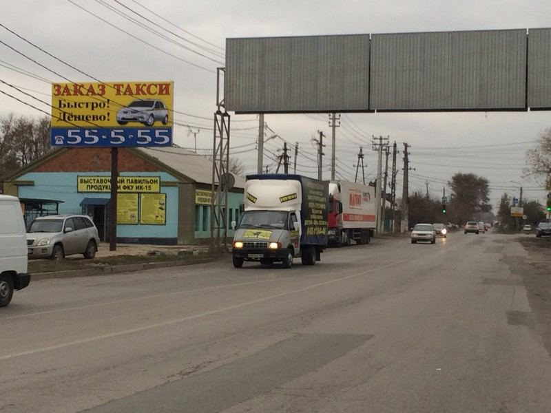
37
Максима Горького, 358 (сторона B)
Свободен
[от … ₽ в месяц]
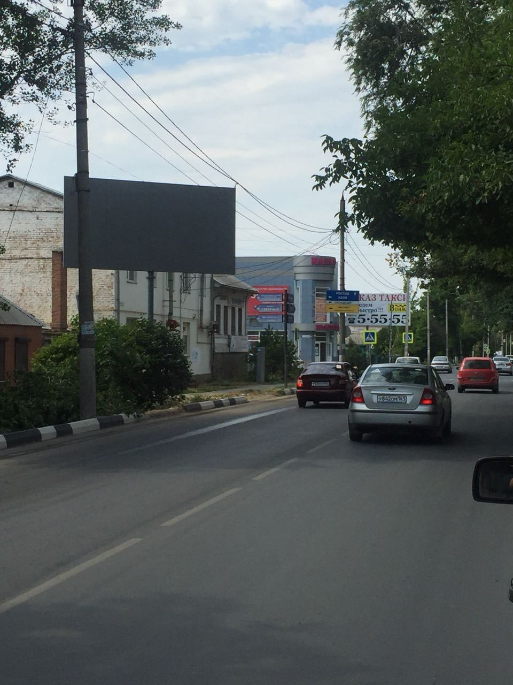
43
ул. Энгельса 134
Свободен
[от … ₽ в месяц]
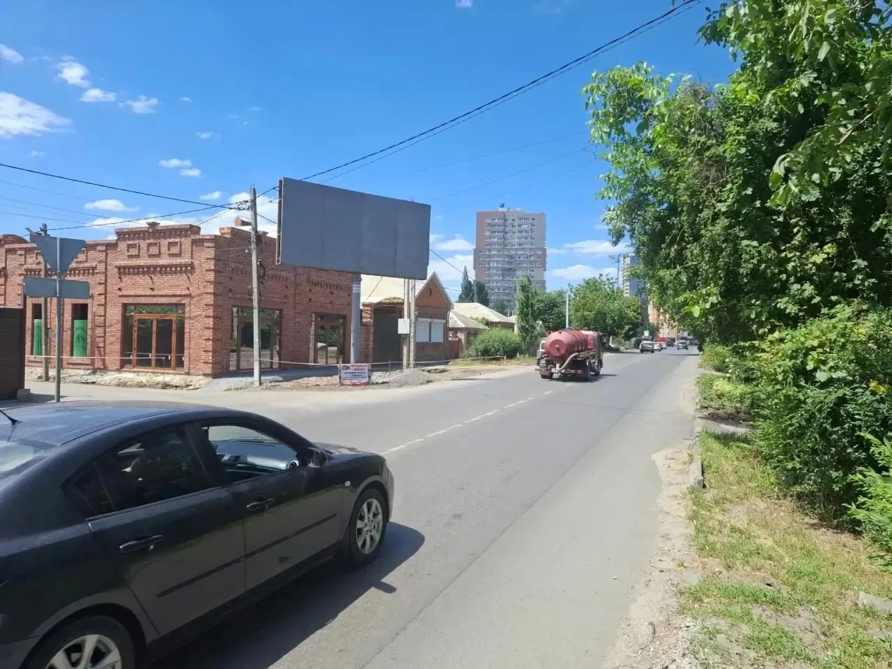
46
ул. Энгельса 40 слева
Свободен
[от … ₽ в месяц]
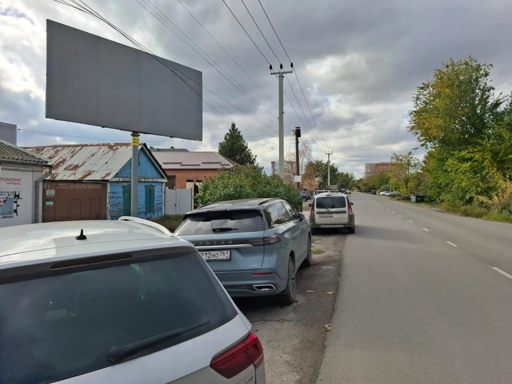
47
ул. Заводская 45
Свободен
[от … ₽ в месяц]
Щиты на въезде в город
Северный подъезд к Батайску. Отметки — метры по ходу километража, как их считает агентство.
въезд в Батайск
слева от дорогисправа от дороги
1610
1650
1650
1690
1700
1730
1750
1770
1800
1810
1885
1890
1980
выезд на Ростов
Выезд, Северный 16
Выезд, Северный 35
Тринадцать щитов подряд на въезде и ещё два на выезде. Все пятнадцать выкуплены до января 2027 года.Машина видит их один за другим — поэтому места на подъезде разбирают на год вперёд.
Полный список мест
По улицам Батайска. Нажмите строку — на карте выше откроется это место.
Северный подъезд и выезды 15 мест · свободно 0
Северный подъезд к Батайску 1610 м по ходу километража, справащит 3×6до 01.01.2027
Северный подъезд к Батайску 1650 м по ходу километража, справащит 3×6до 01.01.2027
Северный подъезд к Батайску 1650 м по ходу километража, слеващит 3×6до 01.01.2027
Северный подъезд к Батайску 1690 м по ходу километража, справащит 3×6до 01.01.2027
Северный подъезд к Батайску 1700 м по ходу километража, слеващит 3×6до 01.01.2027
Северный подъезд к Батайску 1730 м по ходу километража, справащит 3×6до 01.01.2027
Северный подъезд к Батайску 1750 м по ходу километража, слеващит 3×6до 01.01.2027
Северный подъезд к Батайску 1770 м по ходу километража, справащит 3×6до 01.01.2027
Северный подъезд к Батайску 1800 м по ходу километража, слеващит 3×6до 01.01.2027
Северный подъезд к Батайску 1810 м по ходу километража, справащит 3×6до 01.01.2027
Северный подъезд к Батайску 1885 м по ходу километража, справащит 3×6до 01.01.2027
Северный подъезд к Батайску 1890 м по ходу километража, слеващит 3×6до 01.01.2027
Северный подъезд к Батайску 1980 м по ходу километража, слеващит 3×6до 01.01.2027
Выезд из города Батайска, Северный 16щит 3×6до 01.01.2027
Выезд из города Батайска, Северный 35щит 3×6до 01.01.2027
ул. 1-й Пятилетки и М.Горького 356 (сторона B)призматрондо 01.01.2027
Энгельса 10 мест · свободно 4
ул. Энгельса-Крупская 172экранСвободен
ул. Энгельса-Ленинградская 46экранСвободен
Энгельса /Кирова 18 универмагщит 3×6до 01.01.2027
ул. Энгельса-Садовая,51щит 3×6до 01.01.2027
ул. Энгельса-Фрунзе,109щит 3×6до 01.01.2027
Ул. Энгельса -Заводская 130щит 3×6до 01.01.2027
ул. Энгельса 134щит 3×6Свободен
ул. Энгельса-Половинко,45щит 3×6до 01.01.2027
ул. Энгельса 53щит 3×6до 01.01.2027
ул. Энгельса 40 слеващит 3×6Свободен
Заводская 1 место · свободно 1
ул. Заводская 45щит 3×6Свободен
Печать и монтаж
Печать баннеров, интерьерная и широкоформатная печать
Монтажные работы любой сложности
Изготовление, установка рекламных конструкций
Продажа б/у баннеров
Партнёрам
Рекламному агентству, менеджеру отдела маркетинга или тому, кто знает,
кому сдать в аренду рекламный щит: свяжитесь с нами — обсудим детали
партнёрства и размер вашего вознаграждения.